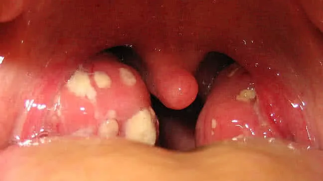

عيادة د. مختار الشرعبي الإستشارية
للأنف والأذن والحنجرة والرأس والعنق
✍ دكتور/ مختار الشرعبي
التهابات اللوزتين تعد من المشكلات الصحية الشائعة، وتؤثر على الكثيرين من الأطفال والبالغين. تلعب اللوزتان دورًا رئيسيًا في جهاز المناعة، لكن عند الإصابة بالتلوث، يمكن أن تصبحا مصدرًا للألم والمضاعفات. في هذا المقال، سنتناول بشكل تفصيلي التهابات اللوزتين ودواعي استئصالها.
✅ وجود اللوزتين في بوابة الجهاز التنفسي له أهمية بالغة في الدفاع وحماية الجسم من غزو الجراثيم.. ويجب الحفاظ عليها.📌 فقط الطبيب المختص هو المخول بقرار إستئصالها،
تقع اللوزتان على جانبي الحلق، وتساهمان في الدفاع عن الجسم من العدوى من خلال إنتاج الأجسام المضادة. يعد التهاب اللوزتين شائعًا، حيث أنه يؤثر على نحو 30 مليون طفل في الولايات المتحدة سنويًا. بينما تصيب البالغين بنسب أقل، إلا أن 1 من كل 5 بالغين يصابون به في مرحلة ما من حياتهم.
التهاب اللوزتين يمكن أن ينتج عن عدوى فيروسية أو بكتيرية، لكن أبحاث تشير إلى أن حوالي 70% من الحالات تكون فيروسية. من الفيروسات الشائعة التي تسبب التهاب اللوزتين هو فيروس الإنفلونزا. أما العدوى البكتيرية، مثل التهاب الحلق العقدي، فإنها تمثل حوالي 30% من الحالات
🌐 ما يجب أن يعرفه الجميع هو ان استئصالها دون داعي يعرض مناعة الجسم للخطر ويصبح اكثر عرضة لغزو الجراثيم وحدوث الاتهابات
عادةً ما يعتمد الطبيب كشف التهاب اللوزتين على الفحص السريري، حيث يقوم بفحص الحلق واللوزتين. قد يطلب إجراء اختبارات سريعة كاختبارات الكشف عن التهاب الحلق العقدي. وفقًا لنتائج الاختبارات، يمكن للطبيب أن يحدد ما إذا كانت العدوى فيروسية أم بكتيرية. هذه المعلومات تلعب دورًا هامًا في نوع العلاج الذي يجب اتباعه.
تتباين خطط العلاج بحسب نوع التهاب اللوزتين. في حالة العدوى الفيروسية، تتضمن الخيارات العلاجية:
أما في الحالات البكتيرية، يُنصح غالبًا باستخدام المضادات الحيوية بشكل فعال. إذا قوبل التهاب الحلق البكتيري بمضاد حيوي خلال 48 ساعة، فإن الشفاء عادة ما يتحقق في غضون 3 إلى 5 أيام.
استئصال اللوزتين يعتبر إجراءً شائعًا وآمنًا، ولكن يجب أن نكون واعين لبعض المخاطر. تتضمن هذه المخاطر احتمالية الإصابة بالعدوى، النزيف، أو ردود فعل نادرة للتخدير. في حال تم اتخاذ قرار إجراء العملية، يمكن للمرضى توقع فترة شفاء تتراوح بين 5 إلى 10 أيام، يتطلب خلالها الابتعاد عن الأنشطة الشاقة.

استئصال اللحمية البلعومية (أو اللحمية) قد يكون ضروريًا في حالات معينة عند إجراء عملية استئصال اللوزتين. إليك بعض الحالات التي قد تستدعي ذلك:
إذا كان الطفل يعاني من التهابات متكررة في اللوزتين واللحمية، فقد يكون من الأفضل إزالة كليهما.
إذا كانت اللحمية متضخمة بشكل كبير وتسبب صعوبة في التنفس أو النوم، فإن استئصالها قد يكون ضروريًا
إذا كانت اللحمية تؤثر على نمو الفك أو الأسنان، فقد يكون من الأفضل إزالتها أثناء إجراء عملية اللوزتين.
إذا كان هناك مشاكل صحية أخرى مرتبطة باللحمية مثل التهاب مزمن أو تكوين خراج، يمكن أن يستدعي ذلك استئصالها.
يجب دائمًا استشارة طبيب الأطفال أو أخصائي الأنف والأذن والحنجرة لتحديد الحاجة الفعلية لاستئصال اللحمية البلعومية أثناء إجراء عملية اللوزتين. الطبيب سيقوم بتقييم الحالة الصحية العامة للطفل قبل اتخاذ القرار
في عيادة د. مختار الشرعبي – تعز، ركن مفرق ماوية – نحرص على تقييم كل حالة بدقة وتقديم خطة علاجية شخصية تشمل الجانب الوقائي والنفسي والدوائي.